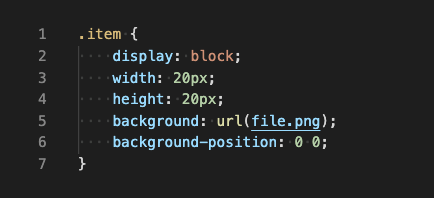
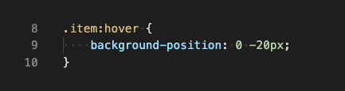

Increase web performance with CSS Sprites

What is a CSS Sprite?
CSS Sprite is a performance optimisation technique which consist of combining multiple images into a single image file called Sprite Sheet. To display a single image from the combined one, you could then use the CSS background-position property, defining the exact position of the image to be displayed. The advantage of using this method is the reduction of network congestion by limiting the number of downloads needed to render a web page. In fact, a web page with many images can take long time to load and generates multiple server requests. With Sprites, the number of HTTP requests will be significantly reduced resulting in overall site performance improvement.
Let’s take an example. It’s common for websites to have multiple icons that change in style when the user hovers over them. When you place the mouse pointer over the browser icons in non-sprite version for the first time the hover image will appear after some time, causing an unwanted “flickering” effect. This happens because the hover image is loaded from the server on mouse hover, since the normal and hover images are two different images. Whereas in Sprite version, since all individual images are combined in a single one, the hover image is displayed immediately on mouse hover which results in smooth hover effect.
How do I create one?
Sprite images can be created with any image editing tool like Photoshop or Gimp to name a few. To create the Sprite Sheet just place all the single images side by side. Now you have a single image file containing all the images you need. Once the Sprite Sheet is ready, it’s time to use CSS to display just the part of an image sprite we need. Here there are a few properties that we can use: width, height, background (to reference the url of the sprite sheet), and background-position.
How to implement a sprite sheet
Suppose an image is given to an item with class item:
How this works is that the image on top is the image I want to display before hover.
That’s why the background is set to top. Then on hover I want the image below to be displayed, so that’s why the background-position is set to bottom.